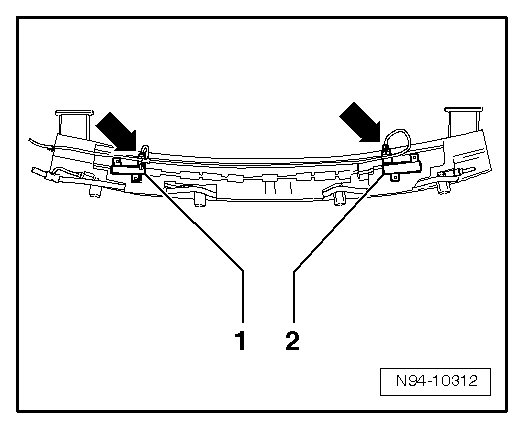
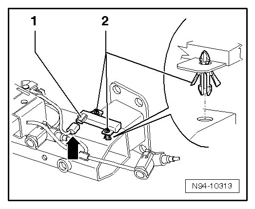

Rear Bumper Access/Start Authorization Antenna
Access/Start Authorization Antennas and Sensors
Rear Bumper Access/Start Authorization Antenna
• Access/Start Authorization Antenna (in rear bumper) (R136) has two parts. The first part is located on left side of rear bumper. The second part is located on right side of rear bumper.
• No coding, basic setting or adaptation is necessary if Access/Start Authorization Antenna (in rear bumper) (R136) is replaced.
Removing
- Switch off ignition, switch off all electrical consumers and remove ignition key.
- Remove rear bumper cover Removal and Installation.
- Disconnect connectors - arrows - of antennae.

- Remove antennae - 1 - and - 2 - from foam piece of bumper carrier.
• Depending on equipment, second part of antenna - 1 - can be secured directly to bumper carrier with two clips - 2 -.

Installing
Install in reverse order of removal.